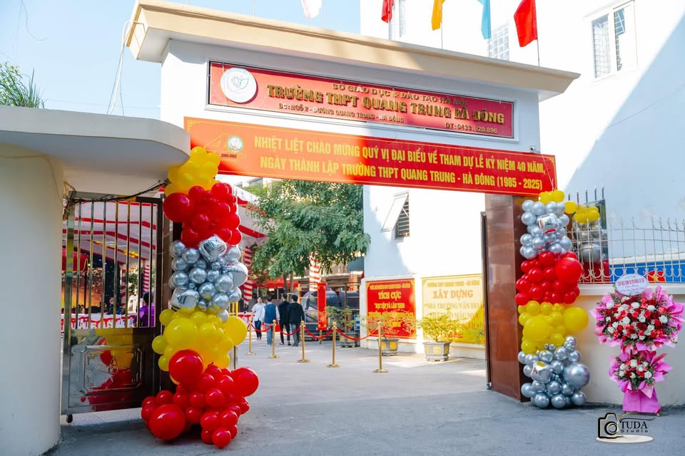
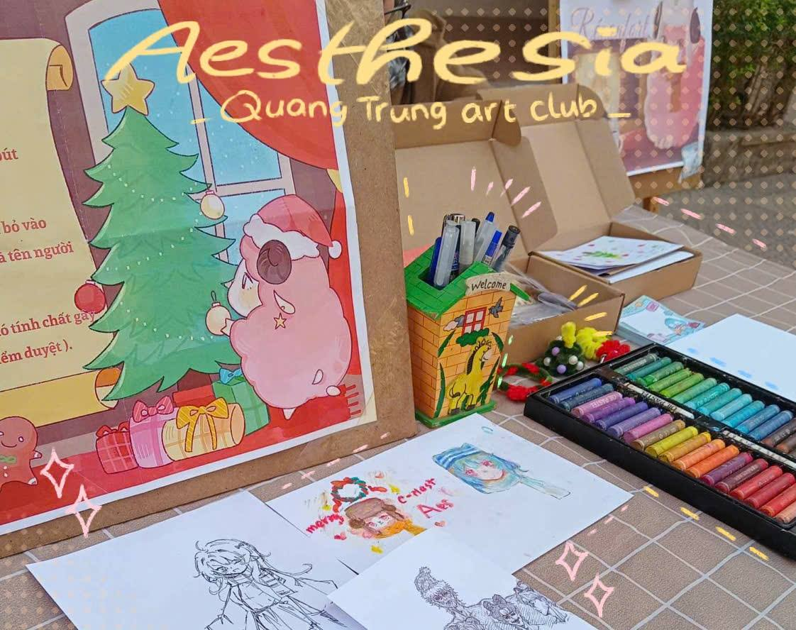
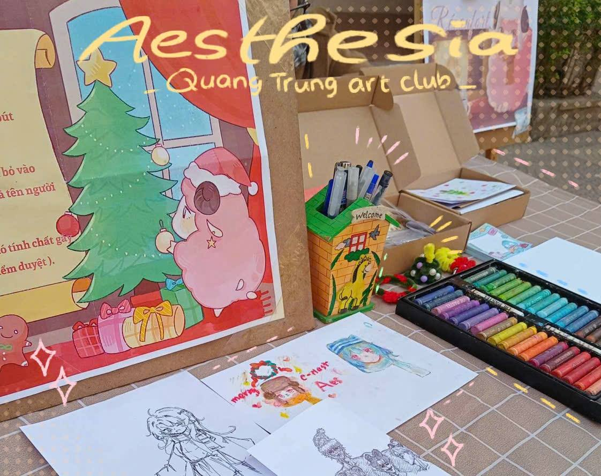

CÁC CÂU LẠC BỘ TRƯỜNG THPT QUANG TRUNG - HÀ ĐÔNG
Các câu lạc bộ của Trường THPT Quang Trung – Hà Đông không chỉ là nơi để học sinh giao lưu, kết bạn mà còn là môi trường rèn luyện kỹ năng, phát triển sở thích và nuôi dưỡng đam mê. Tại đây, mỗi bạn trẻ đều có cơ hội khám phá bản thân, thử thách chính mình trong nhiều lĩnh vực khác nhau như học thuật, nghệ thuật, thể thao và hoạt động xã hội.
Cùng khám phá 1 vòng các câu lạc bộ tại trường THPT Quang Trung - Hà Đông nhé!
1. Aesthesia - Quang Trung Art Club
 

CLB Aesthesia - Quang Trung Art Club đã trở thành một điểm hẹn quen thuộc cho những tâm hồn yêu cái đẹp và nghệ thuật. Được thành lập tại trường THPT Quang Trung – Hà Đông, CLB không chỉ là nơi để các thành viên rèn luyện kỹ năng hội họa, thiết kế và sáng tạo, mà còn là một cộng đồng gắn kết, cùng nhau tạo nên những dấu ấn đặc biệt cho ngôi trường thân yêu.
Tìm hiểu thêm về CLB Aesthesia2. Quang Trung Music Club
Trong nhịp sống sôi động của tuổi học trò, âm nhạc luôn là ngôn ngữ chung để kết nối trái tim và lan tỏa cảm xúc. Quang Trung Music Club (QTMC) – trực thuộc Đoàn trường THPT Quang Trung – Hà Đông – đã trở thành mái nhà chung cho những học sinh yêu ca hát, mong muốn thể hiện tài năng và cùng nhau tạo nên những khoảnh khắc đáng nhớ. Không chỉ là nơi rèn luyện kỹ năng thanh nhạc và biểu diễn, CLB còn là sân khấu để các thành viên tự tin tỏa sáng, đồng thời góp phần làm phong phú đời sống văn hóa học đường
Tìm hiểu thêm về QTMC3. Quang Trung Dance Crew
Giữa những ngày tháng học trò rực rỡ, âm nhạc và vũ điệu chính là nhịp đập trẻ trung của tuổi trẻ. Quang Trung Dance Crew (QDC) – CLB nhảy của trường THPT Quang Trung – Hà Đông – ra đời như một lời khẳng định: tuổi học trò không chỉ có sách vở, mà còn có đam mê, sự sáng tạo và khát vọng tỏa sáng. Mỗi bước nhảy, mỗi tiết mục của QDC đều mang theo năng lượng bùng nổ, trở thành dấu ấn riêng biệt trong đời sống học đường và là minh chứng cho sức trẻ đầy nhiệt huyết của học sinh Quang Trung.
Tìm hiểu thêm về QDC